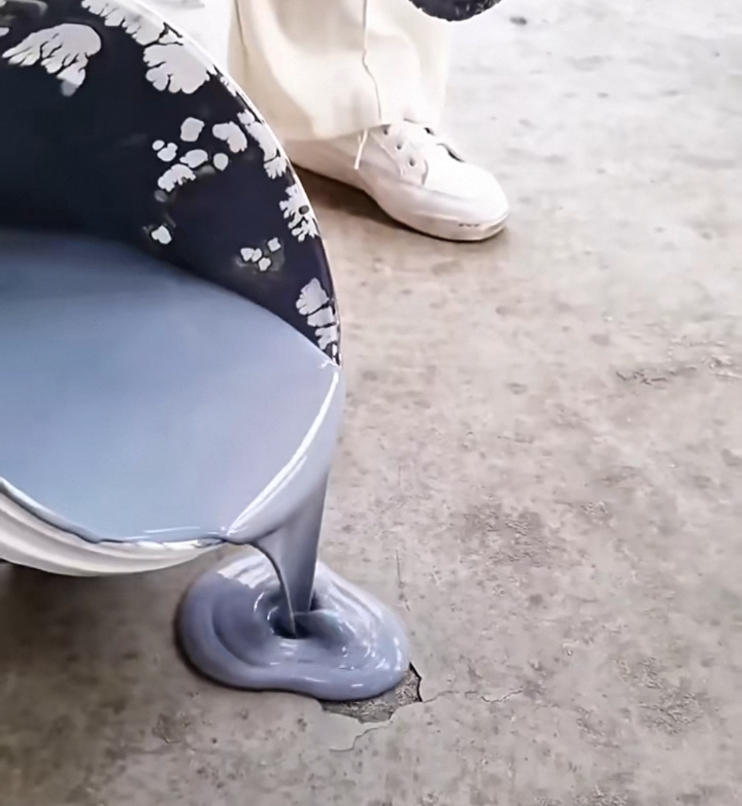
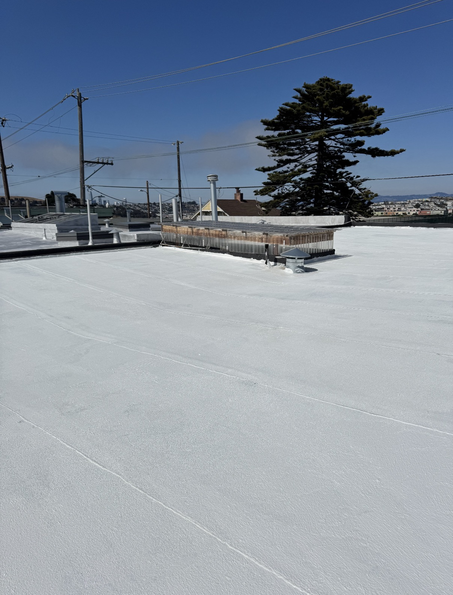

Choose Your System
Stop water—or manage
water and solar heat.
Both routes begin with sound substrate preparation and reinforced treatment at cracks, joints and details. The reflective route adds a high-reflectance white finish.

Standard Waterproofing
Gray Roof Waterproofing
A liquid-applied gray membrane for roofs, parapets, drainage channels and localized waterproof repairs.
View system →
Cool Roof Route
Reflective Waterproofing & Insulation
A white waterproof surface with high solar reflectance to help keep exposed roofs cooler in sunny conditions.
View system →Selection Guide
Waterproofing depends on the details.
Cracks, parapets, drains, penetrations, ponding water and movement zones should be surveyed before the coating area is measured.
Roof field areasUse continuous liquid-applied coats at verified coverage.
Cracks & transitionsReinforce with polyester fabric where required.
Hot sunny roofsConsider the reflective white finish.
Energy claimsConfirm aged reflectance, climate and building conditions.